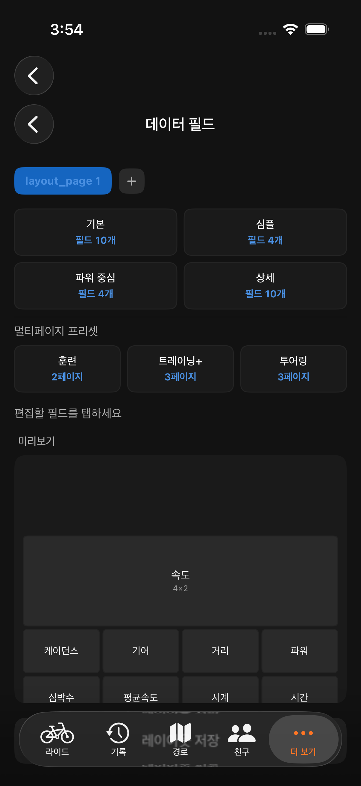

Orider는 80개 이상의 데이터 필드를 제공합니다. 연결된 센서와 라이딩 스타일에 맞는 필드를 골라 화면에 배치하세요. 아래에서 카테고리별로 어떤 필드가 있는지, 그리고 어떤 상황에서 유용한지 소개합니다.
가장 기본적인 정보입니다. "평균 속도"로 오늘의 전체 페이스를 확인하고, "속도 vs 평균"으로 지금 평균보다 빠른지 느린지 한눈에 알 수 있습니다.
| 필드 | 단위 | 설명 |
|---|---|---|
| 속도 | km/h | 현재 속도 |
| 평균 속도 | km/h | 전체 평균 속도 |
| 최고 속도 | km/h | 최고 기록 속도 |
| 5분 평균 속도 | km/h | 최근 5분간 평균 속도 |
| 속도 vs 평균 | km/h | 현재 속도와 평균 속도의 차이 |
| 마지막 랩 평균 속도 | km/h | 직전 랩의 평균 속도 |
심박 센서를 연결하면 실시간 심박수와 심박 존을 확인할 수 있습니다. 지구력 훈련이나 장거리 라이딩에서 오버페이스를 방지하는 데 핵심적인 지표입니다.
| 필드 | 단위 | 설명 |
|---|---|---|
| 심박수 | bpm | 현재 심박수 |
| 평균 심박수 | bpm | 전체 평균 |
| 최고 심박수 | bpm | 최고 기록 |
| 심박 존 | -- | 현재 심박 존 (1~5) |
케이던스(분당 회전수)는 페달링 효율의 핵심 지표입니다. 일반적으로 80~100rpm을 유지하면 무릎 부담이 적고 효율적입니다.
| 필드 | 단위 | 설명 |
|---|---|---|
| 케이던스 | rpm | 현재 케이던스 |
| 평균 케이던스 | rpm | 전체 평균 |
| 최고 케이던스 | rpm | 최고 기록 |
| 케이던스 존 | -- | 현재 케이던스 존 |
| 크랭크 케이던스 | rpm | 파워미터 크랭크 기반 케이던스 |
파워미터가 있다면 가장 객관적인 운동 강도 지표를 활용할 수 있습니다. NP, IF, TSS는 훈련 계획에, W'bal은 레이스 전략에 유용합니다.
| 필드 | 단위 | 설명 |
|---|---|---|
| 파워 | W | 현재 파워 |
| 평균 파워 | W | 전체 평균 |
| 최고 파워 | W | 최고 기록 |
| 가상 파워 | W | 속도/경사 기반 추정 파워 (파워미터 없어도 가능) |
| 3초 파워 | W | 3초 평균 파워 |
| 10초 파워 | W | 10초 평균 파워 |
| 30초 파워 | W | 30초 평균 파워 |
| NP (Normalized Power) | W | 정규화 파워 |
| IF (Intensity Factor) | -- | 강도 계수 (NP/FTP) |
| TSS (Training Stress) | -- | 훈련 스트레스 점수 |
| 총 에너지 | kJ | 누적 에너지 소비 |
| W'bal | kJ | 남은 무산소 에너지 |
| W'bal % | % | 남은 무산소 에너지 비율 |
| 페달 밸런스 | % | 좌/우 페달 파워 비율 |
| 파워 존 | -- | 현재 파워 존 |
| 피크 토크 각도 | deg | 최대 토크 발생 각도 |
| 파워 페이즈 | deg | 파워 발생 구간 (시작~끝) |
| 파워 페이즈 아크 | deg | 파워 페이즈 아크 표시 |
| 토크 효율 | % | 페달링 효율 |
| 최대 힘 | N | 최대 페달 힘 |
라이딩의 가장 기본적인 정보인 거리와 시간입니다. ETA는 경로를 불러온 경우 도착 예상 시각을 보여줍니다.
| 필드 | 단위 | 설명 |
|---|---|---|
| 거리 | km | 총 주행 거리 |
| 시간 | hh:mm:ss | 주행 시간 (일시정지 제외) |
| 경과 시간 | hh:mm:ss | 전체 경과 시간 (일시정지 포함) |
| 정지 시간 | hh:mm:ss | 정지/일시정지 누적 시간 |
| 시계 | -- | 현재 시각 |
| 칼로리 | kcal | 소비 칼로리 추정치 |
| ETA | -- | 경로 도착 예상 시각 (경로 로드 시) |
랩을 사용하면 구간별 성과를 비교할 수 있습니다. 같은 코스를 반복해서 탈 때 구간 시간의 변화를 추적하는 데 유용합니다.
| 필드 | 단위 | 설명 |
|---|---|---|
| 랩 번호 | -- | 현재 랩 번호 |
| 랩 거리 | km | 현재 랩 주행 거리 |
| 랩 시간 | hh:mm:ss | 현재 랩 경과 시간 |
| 마지막 랩 시간 | hh:mm:ss | 직전 랩 시간 |
오르막이 많은 코스를 달린다면 경사도와 고도 정보가 페이스 조절에 큰 도움이 됩니다. VAM(시간당 수직 상승 속도)은 클라이밍 능력의 척도입니다.
| 필드 | 단위 | 설명 |
|---|---|---|
| 고도 | m | 현재 해발 고도 |
| 경사도 | % | 현재 도로 경사 |
| 총 상승 | m | 누적 상승 고도 |
| 총 하강 | m | 누적 하강 고도 |
| VAM | m/h | 수직 상승 속도 |
경로를 불러온 상태에서 오르막에 진입하면 활성화되는 필드들입니다. 남은 거리와 경사를 실시간으로 확인하며 페이스를 조절하세요.
| 필드 | 단위 | 설명 |
|---|---|---|
| 오르막 이름 | -- | 현재 오르막 이름 |
| 오르막 카테고리 | -- | HC, Cat 1~4 |
| 오르막 진행률 | % | 현재 오르막 진행 비율 |
| 남은 거리 | m | 오르막 남은 거리 |
| 남은 고도 | m | 오르막 남은 상승 고도 |
| 오르막 경사 | % | 현재 구간 경사도 |
| 다음 오르막 거리 | km | 다음 오르막까지 거리 |
| 다음 오르막 이름 | -- | 다음 오르막 이름 |
경로를 불러온 상태에서 목적지까지 얼마나 남았는지 확인할 수 있습니다.
| 필드 | 단위 | 설명 |
|---|---|---|
| 남은 거리 | km | 경로 남은 거리 |
| 남은 상승 | m | 경로 남은 상승 고도 |
Shimano Di2 또는 SRAM AXS 전자변속기를 사용한다면 현재 기어 위치와 배터리를 실시간으로 확인할 수 있습니다.
| 필드 | 단위 | 설명 |
|---|---|---|
| 기어 | -- | 현재 기어 위치 (앞/뒤) |
| 기어 비 | -- | 앞/뒤 기어 치수 비율 |
| 기어 배터리 | % | 전자변속기 배터리 잔량 |
| 변속 횟수 | -- | 누적 변속 횟수 |
| 크로스 체인 | -- | 크로스 체인 경고 표시 |
Garmin Varia 같은 후방 레이더를 연결하면 뒤에서 접근하는 차량을 감지하여 알려줍니다. 도로 위의 안전을 위한 필수 장비입니다.
| 필드 | 단위 | 설명 |
|---|---|---|
| 레이더 | -- | 레이더 종합 표시 |
| 위협 수준 | -- | 현재 위협 수준 |
| 차량 수 | -- | 감지된 차량 수 |
| 최근접 거리 | m | 가장 가까운 차량 거리 |
| 접근 속도 | km/h | 접근 차량 속도 |
| 총 차량 수 | -- | 누적 감지 차량 수 |
GoPro나 DJI 액션캠을 연결하면 라이딩 중 녹화 제어와 사진 촬영이 가능합니다.
| 필드 | 단위 | 설명 |
|---|---|---|
| 배터리 | % | 액션캠 배터리 잔량 |
| 녹화 상태 | -- | 현재 녹화 중 여부 |
| 모드 | -- | 현재 촬영 모드 |
| 사진 촬영 | -- | 사진 촬영 버튼 |
| 녹화 제어 | -- | 녹화 시작/정지 버튼 |
현재 위치의 기상 정보를 자동으로 가져옵니다. 특히 풍향/풍속은 라이딩 전략에 직접적인 영향을 미칩니다.
| 필드 | 단위 | 설명 |
|---|---|---|
| 온도 | deg C | 현재 기온 |
| 풍속 | m/s | 현재 바람 속도 |
| 풍향 | -- | 바람 방향 (N, NE, E, ...) |
| 강수량 | mm | 현재 강수량 |
| 습도 | % | 상대 습도 |
| 날씨 코드 | -- | WMO 날씨 코드 |
| 일출 | -- | 오늘 일출 시각 |
| 일몰 | -- | 오늘 일몰 시각 |
스마트폰 자체의 상태와 GPS 정보입니다.
| 필드 | 단위 | 설명 |
|---|---|---|
| 폰 배터리 | % | 스마트폰 배터리 잔량 |
| GPS 정확도 | m | 현재 GPS 오차 범위 |
| 방향 | deg | 현재 이동 방향 (0~360) |

설정 → 디스플레이(Display) → 데이터 필드에서 데이터 화면의 레이아웃을 자유롭게 구성할 수 있습니다. 원하는 필드를 원하는 크기로 배치하여 나만의 사이클링 컴퓨터를 만드세요.